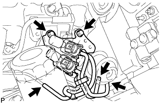

МАСЛЯНЫЙ РАДИАТОР ДВИГАТЕЛЯ (для моделей без DPF) > СНЯТИЕ |
| 1. СНИМИТЕ НИЖНЮЮ ОБЛИЦОВКУ ПЕРЕДНЕГО БАМПЕРА |
Освободите фиксатор, выверните 5 болтов и снимите нижнюю накладку переднего бампера.
| 2. СНИМИТЕ ЗАЩИТУ КАРТЕРА ДВИГАТЕЛЯ № 1 В СБОРЕ |
Выверните 4 болта и снимите защиту картера двигателя № 1.
| 3. СЛЕЙТЕ ОХЛАЖДАЮЩУЮ ЖИДКОСТЬ ДВИГАТЕЛЯ |
Ослабьте пробку сливного крана радиатора.
 |
Слейте охлаждающую жидкость, сняв пробку расширительного бачка, а затем с помощью ключа снимите вентиляционную пробку.
Ослабьте пробку сливного крана блока цилиндров.

| *1 | Бачок радиатора | *2 | Вентиляционная пробка |
| *3 | Пробка сливного крана радиатора | *4 | Пробка сливного крана блока цилиндров |
| 4. СЛЕЙТЕ МОТОРНОЕ МАСЛО |
Снимите крышку маслоналивной горловины.
Выверните пробку сливного отверстия масляного поддона с прокладкой, а затем слейте моторное масло в емкость.
Протрите масляный поддон и пробку сливного отверстия.
Установите новую прокладку и пробку сливного отверстия масляного поддона.
| 5. СНИМИТЕ СТАРТЕР В СБОРЕ |
Для моделей мощностью 2,2 кВт:
Снимите стартер (Нажмите здесь).
Для моделей мощностью 2,7 кВт:
Снимите стартер (Нажмите здесь).
Для моделей мощностью 3,0 кВт:
Снимите стартер (Нажмите здесь).
| 6. СНИМИТЕ ТОПЛИВНУЮ СИСТЕМУ COMMON RAIL В СБОРЕ |
Снимите топливную систему Common Rail (Нажмите здесь).
| 7. СНИМИТЕ НАГНЕТАЮЩИЙ НАСОС В СБОРЕ |
Снимите нагнетающий насос (Нажмите здесь).
| 8. СНИМИТЕ КОМПЛЕКТ ЭЛЕКТРОВАКУУМНОГО КЛАПАНА |
|  |
Отсоедините 2 разъема VSV и 3 вакуумных шланга.
Выверните 2 болта и снимите комплект электровакуумного клапана.
| 9. ОТСОЕДИНИТЕ ПЕРЕПУСКНОЙ ШЛАНГ ОХЛАЖДАЮЩЕЙ ЖИДКОСТИ № 3 (для моделей с охладителем РОГ) |
Отсоедините перепускной шланг охлаждающей жидкости № 3.
| 10. СНИМИТЕ МАСЛЯНЫЙ ФИЛЬТР В СБОРЕ |
 |
Снимите масляный фильтр с помощью SST.
| 11. СНИМИТЕ КРЫШКУ МАСЛЯНОГО РАДИАТОРА В СБОРЕ |
Отсоедините разъем контактного датчика давления масла.
Отсоедините виниловую трубку.
Отверните 2 гайки и отсоедините вакуумную трубку № 2 от крышки масляного радиатора.
Выверните 13 болтов и снимите крышку масляного радиатора.
| 12. СНИМИТЕ МАСЛЯНЫЙ РАДИАТОР В СБОРЕ |
Ослабьте 4 гайки.
Частично извлеките масляный радиатор, подбив головку каждой гайки пластмассовым молотком.
Отверните 4 гайки и снимите масляный радиатор и 2 прокладки.